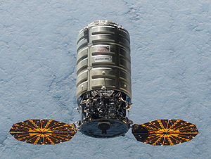

The Cygnus Spacecraft
The Cynus spacecraft is an unmanned cargo spacecraft built and operated by Orbital ATK (formerly Orbital sciences corporation) which is primarily used to deliver supplies to the international space station.Cygnus is normaly launched on an Antares rocket, which is also manufactured by orbital,however it has also been launched on an Atlas v when the antares has been unavailable.
The spacecraft itself is one of several spacecraft that can trace its origins back to the MPLM(Mulit-purpose logistics module) used on the space shuttle, the main difference between the two is that Cygnus is unmaned and capable of flying by itself, to aid in this it is equiped with two large circular solar pannels for power and its own small engine and menouvering thrusters, once it arives at the space station it provides 27m3 of pressurised space which can hold up to 3500kg of cargo.
So far Cygnus has been used on 5 missions with 4 successes and one failure, all of these missions where for the purpose of re-supplying the international space station and currently 6 more such missions are planned before the conclusion of orbital's share of the commercial resupply services(CRS) contract which ends in 2018, however cygnus could also be used again should orbital's proposal for the followup contract (CRS2) be successfull.

A Cygnus spacecraft approaching the ISS.
back to top